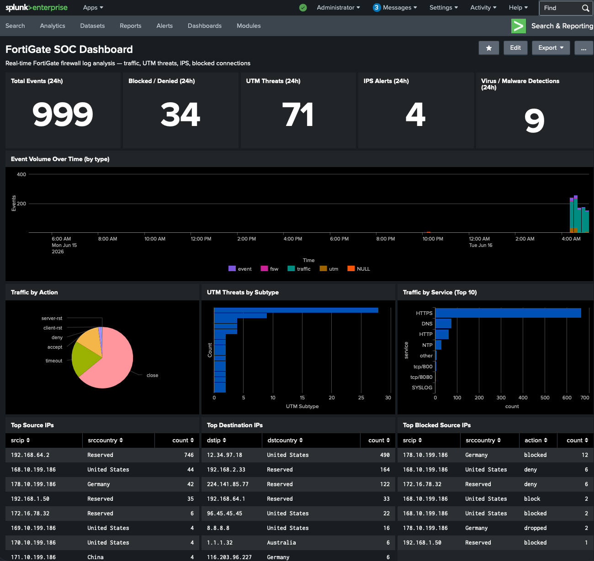

Kontext — zwei Labs, ein Problem
Das Heimlab besteht aus zwei unabhängigen Teilen: einer FortiGate-VM (UTM/QEMU auf dem Mac mini M4) und einem Splunk-Container (Terraform + Docker), in dem 955.807 Events aus dem BOTS v1-Datensatz liegen — darunter der gesamte Cerber-Ransomware-Angriff.
Das Ziel: FortiGate-Syslog in Echtzeit in Splunk einspeisen und dort dashboarden.
Das Problem: Der BOTS-Datensatz (botsv1_data_set, 322 MB) lebt in der
beschreibbaren Container-Schicht — nicht im persistenten Volume. Den Container neu
zu erzeugen (z. B. via terraform apply mit neuen Ports) würde
955.807 Events vernichten. Also kein Container-Rebuild.
Lösung: Splunk hat bereits Port 8088 (HEC) offen — HTTP Event Collector. Statt den Container anzufassen, baut eine schlanke Python-Bridge eine Brücke: FortiGate → UDP-Syslog → Bridge → HTTPS-HEC → Splunk. Kein Rebuild, keine Datenverlust-Gefahr.
Architektur
1 — Splunk vorbereiten: Index + HEC-Token
Zuerst einen eigenen Index fortigate anlegen und einen
HEC-Token mit passendem Sourcetype erstellen — alles per Splunk-CLI innerhalb des Containers,
da Port 8089 (Management-REST) nicht nach außen gemappt ist.
2 — Die Python-HEC-Bridge
Ein schlankes Python-Script wartet auf UDP-Datagramme (FortiGate-Syslog) und leitet jeden Datensatz als JSON-Event an den Splunk HEC weiter — mit 4 parallelen Worker-Threads, damit kein Burst-Traffic verloren geht.
Die Bridge läuft im Hintergrund (nohup python3 fgt-syslog-hec.py &)
und ist in ~/kali-lab/start-lab.sh integriert —
nach jedem Neustart des Mac mini startet sie automatisch mit dem Rest des Labs.
3 — FortiGate: Syslog + HTTP-Inspektion konfigurieren
3a — Syslogd auf die Bridge zeigen
3b — Port 8080 für AV-Inspektion freischalten
Das eingebaute default-Protocol-Options-Profil ist schreibgeschützt
und inspiziert HTTP nur auf Port 80. Das Lab-HTTP-Server läuft auf 8080
(Port 80 ist von Docker belegt) — also ein eigenes Profil:
Warum ein eigenes Profil nötig war: FortiOS schützt default-Objekte
vor Änderungen (read-only factory default). Port 8080 ist kein Standard-HTTP-Port — FortiGate
hätte den Traffic durchgelassen, ohne ihn zu scannen. Das neue Profil lab-http
löst das mit zwei Zeilen.
4 — Das SOC-Dashboard
Das Dashboard (fortigate_soc im Search-App) wurde als
Simple-XML direkt in den Container kopiert — ohne Restart, ohne Terraform.
Sechs Reihen, dunkles Theme, alle Panels auf den Index fortigate.

FortiGate SOC Dashboard · Splunk Enterprise · 999 Events (24 h) · 34 geblockt · 9 Virus-Funde
Total Events · Blocked/Denied · UTM Threats · IPS Alerts · Virus Detections — farbkodiert (grün → rot ab Schwellenwert).
Stacked Column Chart, 10-Minuten-Span, nach type eingefärbt (traffic, utm, event, fsw).
Pie: Traffic by Action · Bar: UTM Threats by Subtype · Bar: Top-10-Service (HTTPS, DNS, HTTP, NTP …).
Top Source IPs · Top Destination IPs · Top Blocked Source IPs — jeweils mit Länderinformation aus dem FortiGate-Log.
IPS-Alerts mit Attack-Name, Severity und Profil · Virus-Events mit Dateiname und Action.
Letzte 25 Sicherheitsereignisse (UTM + denied Traffic) — live aktualisierbar über den Zeit-Picker.
5 — Tests vom Kali-Client
Der Kali-Client (Debian 12 ARM64 hinter der FortiGate) schickt echten Angriffsverkehr durch die Firewall. Jede Verbindung läuft durch die LAN→WAN-Policy mit AV-, IPS- und App-Control-Profil — und landet Sekunden später im Splunk-Dashboard.
Test 1 — EICAR (AntiVirus)
Die FortiGate beginnt, den HTTP-Response-Header weiterzuleiten (daher HTTP 200), erkennt im Body das EICAR-Muster und bricht die Verbindung ab — der Client erhält exakt 0 Byte. Klassisches Verhalten der flow-basierten AV-Inspektion.
| FELD | WERT (Splunk index=fortigate) |
|---|---|
| type / subtype | utm / virus |
| virus | EICAR_TEST_FILE |
| viruscat | Virus |
| action | blocked |
| srcip | 192.0.2.50 (Kali-Client) |
| dstip | 198.51.100.1:8080 (Mac-HTTP-Server) |
| filename | eicar.com |
| profile | default |
| crlevel | critical |
Test 2 — nmap (Traffic-Logs)
nmap-Scans erzeugen traffic/forward-Logs mit Action client-rst
(nmap schickt SYN, bekommt SYN-ACK, schickt RST — die FortiGate loggt das als abgebrochene Session).
Im Dashboard tauchen die Scan-IPs sofort in den Top-Source-IP-Tabellen auf.
| HEDEF | PORT | ACTION | SERVICE |
|---|---|---|---|
| 8.8.8.8 | 53 | client-rst | DNS |
| 8.8.8.8 | 443 | client-rst | HTTPS |
| 8.8.8.8 | 80 | timeout | HTTP |
| 198.51.100.1 | 8080 | close | tcp/8080 (sauber) |
| 198.51.100.1 | 8080 | server-rst | tcp/8080 (EICAR) |
6 — Nützliche SPL-Queries
Automatische Feldextraktion: FortiOS schreibt Logs im
key=value-Format
(srcip=192.0.2.50 dstip=… action=blocked).
Splunk extrahiert diese Felder ohne zusätzliches Add-on automatisch —
kein Fortinet TA notwendig für die Grundsuche.
7 — Persistenz nach Neustart
Nach einem Mac-mini-Neustart reicht ein einziger Befehl, um das gesamte Lab wiederherzustellen:
| DIENST | URL / Adresse | CREDENTIAL |
|---|---|---|
| FortiGate GUI | https://198.51.100.2 | admin / •••• |
| FortiGate CLI | nc 127.0.0.1 4555 | admin |
| Kali-Client | nc 127.0.0.1 4600 | kali / kali |
| Splunk UI | http://localhost:8000 | admin / SOClab123! |
| SOC-Dashboard | …/app/search/fortigate_soc | — |
Erkenntnisse
Wertvolle Daten im Container-Layer? Nie den Container anfassen. HEC ist die chirurgische Alternative — neue Datenquelle, bestehende Daten unangetastet.
FortiGate scannt HTTP nur auf Port 80. Non-Standard-Ports (8080) brauchen ein eigenes Protocol-Options-Profil — sonst passiert Traffic ungeprüft.
Flow-basierte AV startet die Antwort, bevor der vollständige Body da ist. Erkennt sie das Muster, bricht sie die Verbindung ab — HTTP-Status-Code ist kein Indikator für Erfolg.
key=value-Syslog + Splunk KV-Extraktion = sofort suchbare Felder (srcip, action, virus, attack) ohne TA-Installation.
Teil der FortiGate-Lab-Serie: Setup, QEMU-Client-Anbindung, IPS-Custom-Signatur, EICAR-AV-Test und jetzt die Splunk-SOC-Pipeline sind vollständig dokumentiert. → fortigate-vm-lab-apple-silicon auf GitHub